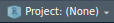

Installing Required R Packages
In Training 3: R and RStudio Setup we briefly went over the basics of Installing R packages.
In this section we are going to ensure the R packages required to run the RShiny Protecting Nature Webtools are installed on your computer. You might recall that in R one can install one or more packages using the base R function
install.packages()
install.packages(c('prioritizr', 'sf', 'terra', 'exactextractr', 'dplyr', 'ggplot2'))
or we showed how we can use other libraries such as the pacman package to install one or more functions:
pacman::p_load(prioritizr, sf, terra, exactextractr, dplyr, ggplot2)
In the Protecting Nature Webtools repository that you downloaded, this is all done within the required start.R script that is needed to run the RShiny application itself:
list.of.packages <- c(
"shiny",
"shinydashboard",
"shinyIncubator",
"shinymanager",
"prioritizr",
"here",
"readxl",
"writexl",
"plyr",
"dplyr",
"tibble",
"readr",
"sf",
"ggplot2",
"foreign",
"vegan",
"terra",
"leaflet",
"rhandsontable",
"googlesheets4",
"Matrix",
"tidyr",
"gurobi",
"zip",
"DT",
"argparser",
"purrr",
"devtools"
)
new.packages <-
list.of.packages[!(list.of.packages %in% installed.packages()[, "Package"])]
if (length(new.packages)) {
install.packages(new.packages, repos = "https://cran.rstudio.com/")
}
if (!require(leaflet)) {
if (!require("devtools"))
install.packages("devtools")
devtools::install_github("rstudio/leaflet")
}
if (!require(shinyIncubator)) {
devtools::install_github("rstudio/shiny-incubator")
}
shiny::runApp(launch.browser = TRUE)
The start.R script will not only run and open the the app in a browser (via the function call shiny::runApp(launch.browser = TRUE) in the last line), but will also check if packages are already installed, and install them if they are not.
Note
When we run the app (e.g., run start.R) below, assuming that it correctly installs all the required R packages without further problems, the app will not start start and it will close with some error messages about not being able to find files. This is expected - they have not been created yet. We will address that shortly.
Running the App
Open RStudio (if not already open). By default RStudio will open with the last opened R Project. If this is not the R Project we created perviously, click the  button and navigate to the correct project (recently opened projects should be shown in the dropdown menu and be easy to locate).
Open the
start.Rscript by either typingShift+Oon your keyboard OR clicking your mouse on File → Open File…, which will open a window showing all the files in your working directory. Selectstart.R. You can also simply click on the File panel in RStudio, and click on thestart.Rfile. Thestart.Rfile will open in the the editor panel.
{kind=link}
There are two ways to run the start.R script:
Click on the
 button on the top-right of the editor panel, or
button on the top-right of the editor panel, orType Ctrl+Shift+Enter on your keyboard.
Everything will have worked perfectly and all the required R packages will have installed without a problem. Of course.
Errors
Inevitably, many of you will encounter errors while packages are being installed when start.R runs.
That is why we are here today in this training - to help you all troubleshoot the possible errors that you might encounter; for instance, particular R packages may produce errors more commonly than others (for instance, errors with gdal, sf and their dependencies can be encountered occasionally on Linux systems), as are errors related to installing packages on Windows where RTools has not been installed.
We are here to help.